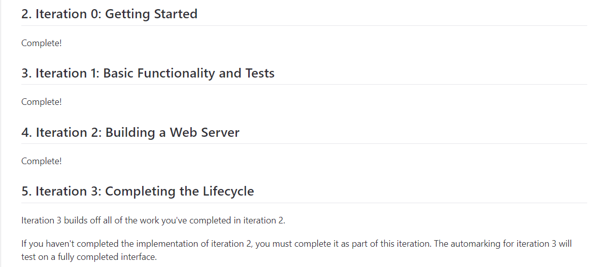
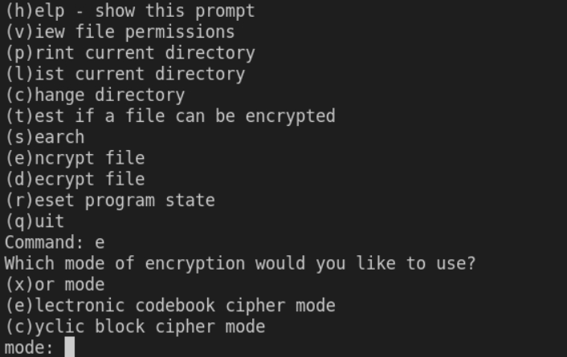
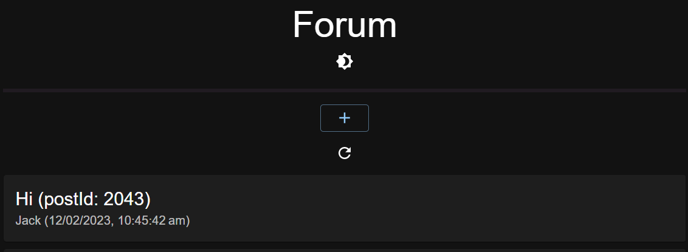

Profile
Edit src/App.js and save to reload.
Projects

Treats
Created the backend for a Microsoft Teams like website built
over the course of two and a half months with four other individuals in an
agile environment. Used a variety of technologies such as Git,
NPM (TypeScript, Jest, esLint, sync-request, Crypto, fs), Advanced Rest Client.

Bytelocker
Created the backend for a program capable of traversing folders, searching
for files within subfolders, and performing XOR and ECB encryption/decryption.
Written in C.

Forum
Created the backend for a simple forum website capable with the functionality
of creating posts and writing comments. Used technologies such as Git and NPM.
Written using TypeScript, with tests written using the NPM Jest library.